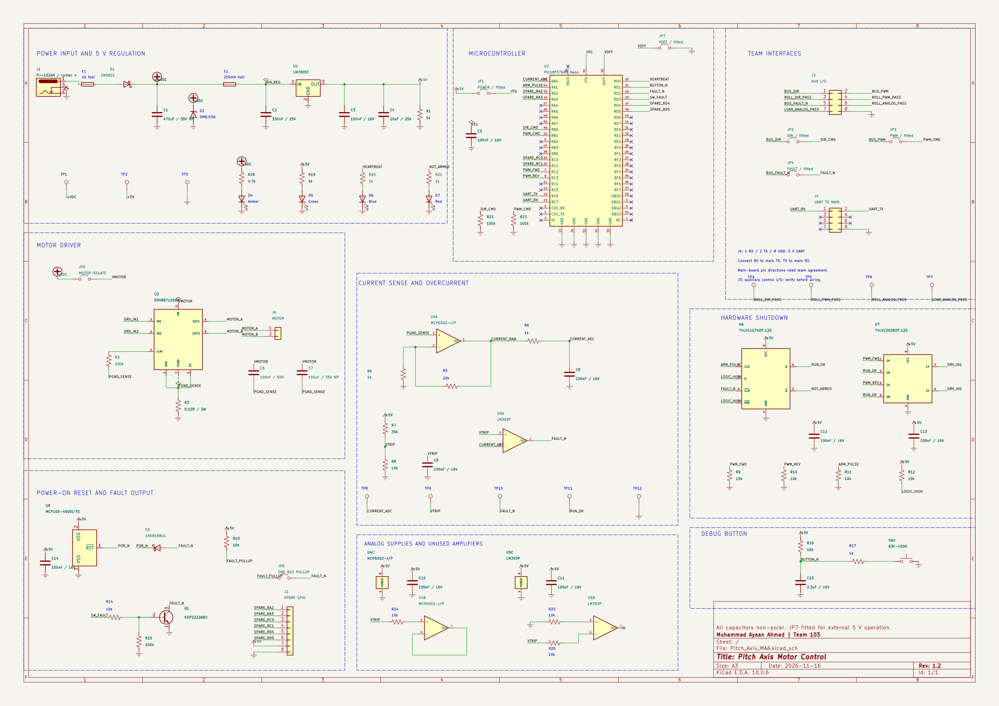

Schematics
Overview
The pitch-axis board controls the brushed DC motor for Team 103’s robotic arm. A PIC18F57Q43 Curiosity Nano receives commands from the team bus, reads motor current, and controls the DRV8871 H-bridge. The board can shut off the motor if it detects a fault.

Schematic Sections
| Section | What it does | Key parts |
|---|---|---|
| Power and protection | The 9–12 V input powers the motor driver. The regulator supplies 5 V to the control circuit. | J1, F1, F2, D1, D2, U1 (LM7805T) |
| Microcontroller | Reads team commands and motor current, then sends speed and direction commands to the driver circuit. | U2 (PIC18F57Q43 Curiosity Nano) |
| Motor drive | The H-bridge controls motor direction and speed. J6 connects the two motor wires. | U3 (DRV8871), JP5, J6 |
| Current measurement | The shunt measures driver return current. An amplifier and low-pass filter prepare the signal for the ADC. | R3, U4A, R4–R6, C8 |
| Fault shutdown | A comparator detects overcurrent. The latch and logic gates block both motor inputs during a fault until the controller rearms the circuit. | U5A–U8, Q1, JP4, JP6 |
| Team connections | J3 carries team commands and the shared fault signal. J4 and J5 carry upstream receive and downstream transmit signals. | J3–J5 (keyed 2×4 IDC) |
| Debug and expansion | The pushbutton sends a debug or arm request. The LEDs show power and status, and J2 exposes spare pins. | SW1, D4–D7, J2 |
Microcontroller Pin Map
| Signal | PIC pin | Nano pad | Connection |
|---|---|---|---|
| CURRENT_ADC | RA0 | 43 | Filtered motor current |
| ARM_PULSE | RA1 | 44 | Arm pulse to the hardware latch |
| DIR_CMD | RB0 | 46 | Pitch direction command from J3 |
| PWM_CMD | RB1 | 10 | Pitch PWM command from J3 |
| PWM_FWD | RC2 | 7 | Forward PWM to motor input logic |
| PWM_REV | RC3 | 8 | Reverse PWM to motor input logic |
| UART_RX | RC7 | 19 | Receives upstream data from J4 |
| UART_TX | RC6 | 13 | Sends data downstream through J5 |
| HEARTBEAT | RD0 | 20 | Blue heartbeat LED |
| BUTTON_N | RD1 | 21 | Active-low debug or arm button |
| FAULT_N | RD2 | 22 | Shared active-low fault input |
| SW_FAULT | RD3 | 23 | Software fault output to Q1 |
Design Notes
The current-sense amplifier has a gain of 21. R6 and C8 filter the signal at about 1.59 kHz before the ADC.
J4 and J5 use pin 1 for data and pin 8 for ground. Confirm the cable pinout with the team before hookup.